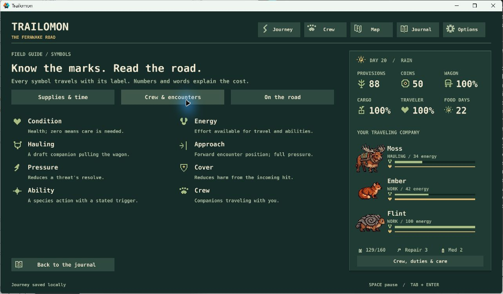
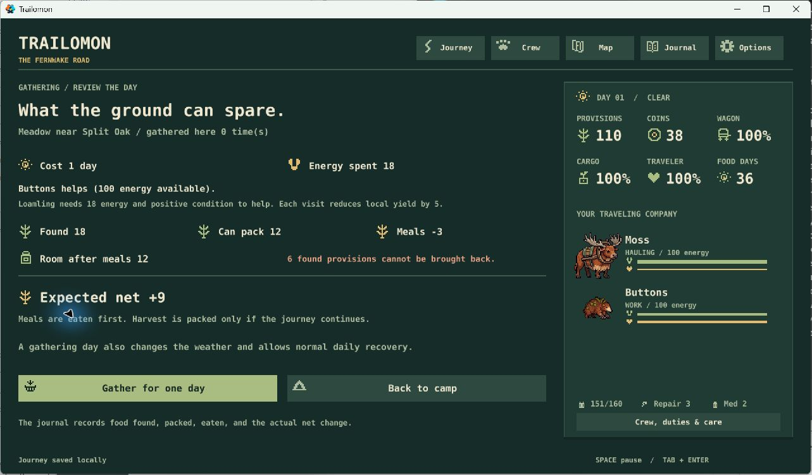
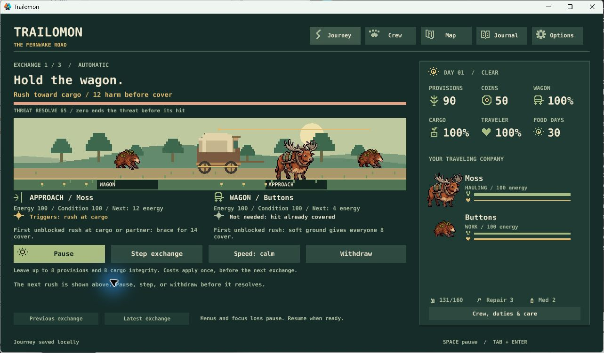

Trailomon · current expedition priorities · October 30, 2026
Prove that the whole journey works.
The expedition report tool is working. Next: play the full trip, use the evidence to tune combat, and make the route’s growing remoteness felt. Astronarch leads crew preparation and automatic combat; Oregon Trail still leads the journey.
Your decisions stand. N1–N8 are already YES (submission 34). N2 and N4 shipped in PR #7, alongside the shared icon system. N1’s report tool (S2) is now implemented; its balance work (S5) remains open. The options below track approved work, not another approval request. No new vote is needed. Your saved answers stay intact; use comments and FINISH only if you want to steer or change them.
N1: a report for the whole expedition
Implemented: one command exports every decision and its reason, before/after resources, recovery days, resource lows, input-mode gates, and outcomes. Matched continuations fight, resolve peacefully, or withdraw from the same encounter snapshot and then use the same later policy. Each batch runs twice; an individual trace can be replayed against its source/runtime fingerprint.
./tools/expedition_report.ps1 -CompareCommitted baseline: seeds 1–40 under three reference policies; 120 full journeys and 339 continuations from 113 sampled encounter starts. Every case completed and matched its repeat exactly. Source 81e7004, clean working tree. These are bot playtests of the real model; they do not establish human playtime or usability.
| Policy | On time | Median arrival |
|---|---|---|
| Careful | 23 / 40 | Day 26 |
| Peaceful | 14 / 40 | Day 27 |
| Fighter | 5 / 40 | Day 28 |
What the matched starts add: fighting scavengers lost an on-time delivery in 24 of 75 comparisons with the first available peaceful choice, gained none, and added a median one recovery day. Guardian fights gained one on-time delivery and lost two across 38 comparisons; median arrival difference was zero, with a median one extra recovery day. These are the current reference crews and decisions, including repeated starts across policies—not independent trials or proof about optimal play.
A trace you can inspect: seed 1, careful policy, early scavengers. Fighting kept the immediate food but spent 40 total crew energy; the continuation needed a recovery day and arrived on day 27. Leaving six provisions arrived on day 26 without that recovery day. Later weather and events can also change when the intervention changes time.
Verification: 40 Lua tests, 17 Python checks, native persistence and 34 GUI states passed. Reporting reproduces all 120 original benchmark end states, detects deliberate stalls and policy faults, retains journal additions past the display limit, rejects altered traces/source, and preserves existing output folders. The committed sample passed replay through the PowerShell launcher. No game balance or player saves changed.
Limits: lows are sampled at command boundaries; resource changes are net, not gross internal spending. Gates show where input is needed, not how long a person waits. The policies are frozen benchmarks, not optimal players. Physical keyboard, listening, full-trip pacing, and the hidden-window launch issue remain separate checks.
Readable report · All run summaries · Matched results · Paired summary · Replayable sample · Provenance
Next use of this evidence: N8’s complete player journey, with special attention to recovery after an otherwise successful battle, followed by S5 tuning. The tool is delivered; balance conclusions still need that judgment. Your existing approvals remain in force.
Verdict: still building core systems
The expedition is playable from departure to outcome. The next milestone is a convincing, repeatable 20–35 minute trip whose crew choices matter. We have not yet established that pacing or balanced combat against travel.
- Shipped: one route with six landmarks and two branches, six creature species, eighteen authored events, automatic encounters with peaceful alternatives, bounded gathering, and horizontal progression. Named companions, discoveries, memories, ten recent journey summaries, and a covered-wagon unlock already support another departure.
- Clarity is now part of the foundation: 27 canonical symbols with labels and a Journal guide; ability-readiness forecasts; travel-duty advice; gathering effort, meals, space, and net yield. Future features must extend this same visual language.
- Basics exist: save/resume and backup recovery, sound on/off, reduced motion, and an offline Windows ZIP. These need end-to-end verification as the game grows, not replacement systems.
- Fresh evidence: the N1 baseline and test results are above. Earlier focused Windows playtests and a normal extracted-build launch remain valid; this tool batch did not perform a new full human playthrough.
- Open gaps: whole-trip pacing, combat recovery costs, distinct guardian behavior, wilderness presentation, final creature anatomy/poses, equipment, listening review, and physical keyboard usability. No automated failure was found. Hidden-window activation still has a documented native crash; normal launch passed. Do not count a hidden capture as visual evidence.
Recommended order: N8 whole-trip playtest using the N1 reports → N3 guardian experiment and evidence-led S5 tuning → N5/N6 wilderness and creature refinement → N7 equipment. Keep the existing roster and route.
Approved work: progress and next steps
N1Reporting delivered; expedition tuning remains
S2’s repeatable report command and matched comparisons are implemented. Use the resulting evidence and the full-trip playtest to guide the remaining S5 balance work. Keep deterministic replay and the original benchmark policies.
Evidence: 120 full journeys and 339 continuations completed and repeated exactly. Scavenger fights often added recovery time in this sample, which gives us a concrete place to investigate.
Cost and recommendation: reporting is complete; bounded tuning follows N8’s playtest. No additional combat or survival system is implied.
N3Give the guardian a recognizable pattern
Try the approved C2 sequence: cargo shove, approach warning, heavy rush, within the current four-exchange limit. Show intent before commitment and compare it with the existing guardian.
Evidence: Both current opponents use a 55% cargo target chance and an alternating heavy rush. Their costs and objectives differ more than their behavior.
Cost and recommendation: One behavior experiment with save, forecast and journey checks. After the N1 baseline; before equipment. No additional enemy or region.
N5Make the road steadily become wilderness
Give the six existing landmarks distinct scenery and brief ecological lore. Let maintained ruts, roofs and reliable signs fade; make the last resupply and upland commitment unmistakable. Reuse the same location and action symbols.
Evidence: Increasing remoteness is a core pillar and your repeated preference. The route exists, but its full visual progression has not been finished or verified as a sequence.
Cost and recommendation: Two or three small scenery/lore PRs within S7. Strongest next improvement to the game’s identity. Use existing assets first.
N6Finish the six companion silhouettes
Audit the roster in grayscale and at wagon scale, then refine the selected art, anatomy and role poses. Prioritize Brindlehorn’s hollow antlers and Reedskipper’s paddle tail; inspect each accepted change in the actual game.
Evidence: The current assets are selected development studies with simple movement. A coherent palette and readable icons do not replace finished anatomy and poses.
Cost and recommendation: An art audit followed by small species batches in S8. Pair this with N5’s visual direction. Keep six species; reject unsuitable variants.
N7Try three work items after tuning
Build the approved single-slot, three-object experiment. Each item trades travel utility against an encounter or carrying cost. Judge whether it changes crew preparation, not whether it merely increases damage.
Evidence: Equipment is still absent. It could add Astronarch-like preparation depth, but would obscure the baseline if introduced before S5.
Cost and recommendation: About two small implementation/validation PRs in S9. Keep after tuning and N4, which has shipped. No loot tiers or item grind.
N8Play the whole journey as a new player and an expert
Run fresh and resumed expeditions, including a failure/return path. Record real playtime, quiet stretches, recovery loops and confusing decisions. Listen to sound, verify persistent options, and check physical keyboard control. Fix clear bugs immediately.
Evidence: Recent tests cover focused encounters and gathering. The earlier full journey predates automatic combat. The 20–35 minute target, listening review and physical keyboard pass remain unproven.
Cost and recommendation: One complete playtest/report batch plus confirmed fixes, covering S10/S11. Do this after the N1 report tool, before adding equipment.
Completed from the same approval
Original codes and saved answers remain here for continuity. These are delivered changes, not pending proposals.
N2Shipped: explain the next trigger and next job
C1 and C3 are implemented: each combatant explains whether its next ability will trigger, why it cannot, and the energy cost. Results relate remaining crew energy to existing travel duties.
Evidence: Forecasts use the real resolver on copied state, agree across ordered pairs and four energy levels, and do not consume live RNG. Focused Windows playtests verified partner cover, follow-up and spent abilities.
Cost and recommendation: Delivered in PR #7 / S14. Keep this explanation contract when N3 or N7 changes the rules.
N4Shipped: make a gathering day easy to judge
S6 now previews place, depletion, effort, meals, carrying room, food found, food packed and net gain, then logs the actual receipt. Hunting remains deferred.
Evidence: A fresh-profile playtest matched 18 found, 12 packed, 3 meals and +9 net; the wagon reached 160/160. The road-closure preview bug was fixed.
Cost and recommendation: Delivered in PR #7. Keep the preview and actual result in agreement when later systems change capacity or effort.
Clarity playtest evidence and screenshots
Clarity pass: implemented and tested
Your answers were received: N1–N8 all YES. Your comment makes visible clarity and simplicity critical path. This update records the first implementation batch; no second vote is needed. The options below retain their original codes and your saved answers.
What changed: a shared catalog now defines 27 labeled resource, role, and action symbols, with an in-game Journal → Symbol guide. Hauling, gathering, and the approach position have their own marks. Icons draw at whole-pixel sizes. Combat explains the upcoming trigger or its blocking reason, and the result relates remaining energy to an existing travel duty. Gathering separates food found, room after meals, food packed, and net gain.

New-player role: using the on-screen camp controls, I reviewed and gathered with a nearly full wagon. The preview showed 18 found, 12 packed, 3 meals, +9 net and 18 digging energy. The actual result advanced one day, raised provisions from 110 to 119, filled the wagon to 160/160, and recorded the receipt. Buttons ended at 89 energy after the day's normal recovery.

Expert role: Flint's wagon cover triggered Ember's follow-up exactly as forecast. Both then said “Spent this encounter.” Withdrawal still charged one day and four provisions once; the result explained net recovery and whether Moss could haul. I inspected every symbol-guide group at 1280 by 720. A separate hand-gathering check matched 6 found / 6 packed / 4 meals / +2 net.

Already fixed: the gathering preview could promise a harvest on the day the road closes, even though rescue happens before food is packed. The preview now returns zero packed food and the screen explains why gathering cannot finish. Remaining player-facing “stamina” labels now say Energy.
Verification: 34 Lua tests, 12 Python checks, native save/recovery and 34 GUI states pass. Forecast tests cover all ordered pairs at four starting-energy levels, with live-state/RNG immutability checks. Existing journey counts remain 37/80 baseline deliveries and 5/40 fighting-first deliveries. Mouse-driven focused playtests passed; physical keyboard usability, full-trip pacing, listening review, final art, and expedition balance remain open.
N2 and N4 are implemented in this batch. N1 measurement/tuning, N3's guardian experiment, N5 wilderness, N6 art, N7 equipment, and N8's full-journey pass remain approved work. This evidence is from the preceding clarity batch, not a new desktop playtest during this audit.
No additional region, large bestiary, permanent stat grind, or combat-clock rewrite is part of this batch. Public release remains a later, separate decision. This audit does not change game rules.